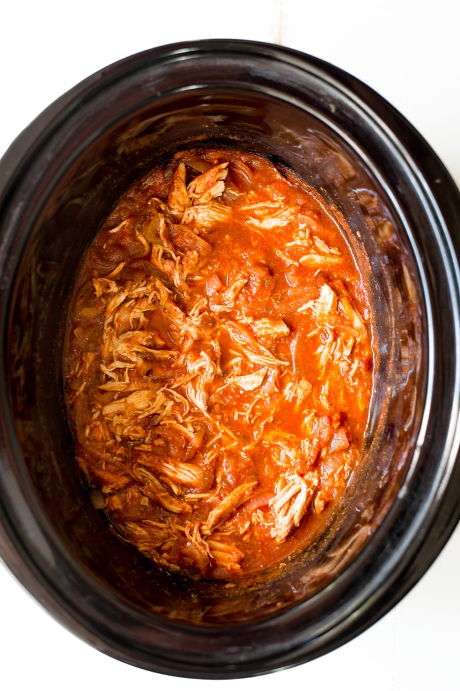

Healthy Shredded Chicken

Description
Easy Instant pot Healthy Shredded Chicken recipe.
Prep Time: 15 minutes Cook Time: ~ 8 hours
Ingredients
- 1 tsp cumin
- 1/4 cup cilantro
- 4 strips bacon, sliced
- 1.5 cup mushrooms, sliced
- 1/4 cup parsley
- 1/2 cup salsa
- 8 cloves garlic, chopped
- 1/2 bell pepper, sliced
- 1/2 onion, chopped
- 1 lime
- 1/2 cup white cooking wine
- 1 tbsp butter
- 2 cups celery, chopped
- 2.5 lb chicken breasts
- Salt
- Pepper
- Saute bacon, garlic, bell peppers, onion and mushrooms until cooked.
- Add everything to the Instant pot in this order: celery, chicken, cumin,
cilantro, parsley, bacon and veggies, butter, salsa, wine and salt/pepper.
- Pressure cook for 8 hours.
- Shred chicken then enjoy.
Back to Homepage